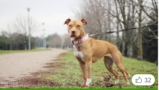

Amerikai Pitbull Terrier
Az ausztrál pásztorkutya története:
Amilyen tarka az ausztrál pásztorkutya kinézete, olyan színes és sokoldalú őseinek galériája is. Hiszen többféle, európai bevándorlókkal Ausztráliába érkezett kutyából adódik össze. Ezek az energikus kutyák a farmereknek segítkeztek a nagy marhacsordák mellett: a kontinens nagy távolságain terelték őket. Ezen pásztorkutyák elődei vélhetően a mai bobtail-ekhez voltak hasonlatosak, de a hosszú szőr inkább hátrányos volt az ausztrál klímaviszonyokhoz.Az ausztrál pásztorkutya-tenyésztés úttörőjének Thomas Simpson Hall számít, aki a XIX. században nemcsak szarv nélküli marhákat importált Nagy-Britanniából – és sikeresen tenyésztette is azokat -, hanem egy kutyatenyészetet is felépített. Ehhez pettyes munkakutyákat – ún. drover dog-okat – használt, valamint szelídített dingókat. Az eredmény – ahogyan ő nevezte, a „Hall's heeler“ nagyon sikeres terelőkutya volt.Hall's halála után más kutyákkal is keresztezésre kerültek ezek a négylábúak , így többek között az ausztrál kelpie-vel – nem utolsósorban a harmonikus kinézet elérésére, hiszen maga a „heeler“ lénye tulajdonképpen megfelelt sok, nagy marhacsordát tartó farmer kívánságainak, hisz a szorgos négylábúak nagyszerű szolgálatot nyújtottak. Ezen keresztezések nyomán alakult ki végül a modern „australian cattle dog“, mint kiváló terelőkutya. Az első fajtaszabvány 1903-ban jelent meg, majd azt követően egyre inkább szétvált a munka-- és kiállítási kutya vonal.
Az ausztrál pásztorkutya kinézete:
A közepes méretű kutya sportos-kompakt testalkatú, a nagyobb hímek akár 51 cm-es marmagasságot is elérhetnek. Felfelé álló fülei széles koponyán helyezkednek el. Az australian cattle dog sűrű aljszőrzettel bír, rövid fedőszőrzete lehet kék vagy vörös pettyes, s mindig láthatók benne világos-vöröses-barnás foltok. A kölykök még fehér-foltosan születnek, később aztán egyre több pötty jelenik meg bundájukban. A fajta megjelenése harmonikus összképet nyújt, s erőt valamint dinamikát sugároz.